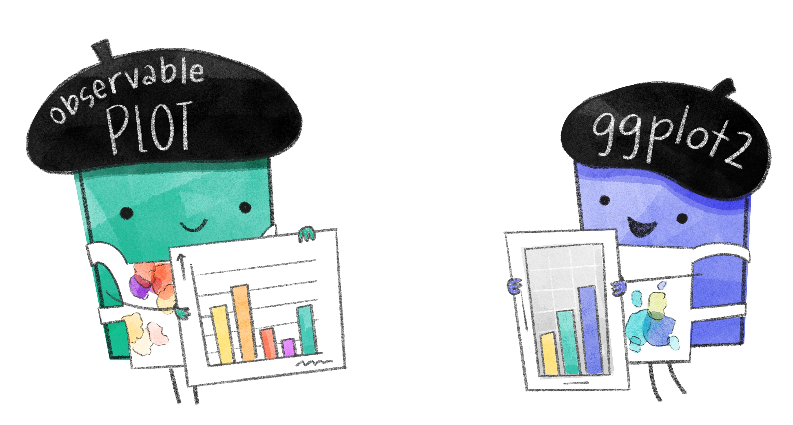

A comparison of basic data visualization in ggplot2 and Observable Plot
R to JavaScript translations
Author
Allison Horst
Published
April 23, 2022

Observable Plot and ggplot2 admiring each other’s talent for creating beautiful data visualizations in JavaScript and R!
Overview
The goal of this document is to compare code for basic data visualization using the ggplot2 package in R, and the Observable Plot library in JavaScript.
Be warned: I’m a JavaScript newbie and this is very much a living document!
The bare bones
So what do the “bare bones” structures of a basic plot made with ggplot2 and Plot look like? How are they similar, and how are they different?
A ggplot2 skeleton
The basic structure of a ggplot scatterplot looks something like the code below. The arguments within geom_point() here can also be within ggplot(), which would make them the default across multiple geometries if there were multiple plot types overlayed in the same ggplot object. For the sake of easier comparison between libraries, I’m putting the data and variable information (aesthetic mappings) within the geom layer.
data = df: data frame (df) from which information is pulled to make the graph
aes(): provide a list of aesthetic mappings (e.g. what are the x- and y-variables, but can also include other aesthetics mapped onto a variable).
An Observable Plot skeleton
Note: I don’t have the language yet to talk about some Observable Plot specifics - I’m working on it! This reflects my current thinking about how ggplot2 pieces map onto Observable Plot plot code.
First, what would the skeleton shown in ggplot2 above look like in Plot?
── Conflicts ────────────────────────────────────────── tidyverse_conflicts() ──
x dplyr::filter() masks stats::filter()
x dplyr::lag() masks stats::lag()
import { aq, op } from'@uwdata/arquero'
Read in penguins.csv
Read in the data using readr::read_csv() and aq.loadCSV() (the latter from the Arquero JavaScript library).
penguins_r <- readr::read_csv("penguins.csv")
Rows: 344 Columns: 8
── Column specification ────────────────────────────────────────────────────────
Delimiter: ","
chr (3): species, island, sex
dbl (5): bill_length_mm, bill_depth_mm, flipper_length_mm, body_mass_g, year
ℹ Use `spec()` to retrieve the full column specification for this data.
ℹ Specify the column types or set `show_col_types = FALSE` to quiet this message.
penguins_js = aq.loadCSV("penguins.csv")
penguins_js.view(10)
A scatterplot of bill dimensions in ggplot2
ggplot() +geom_point(data = penguins_r, aes(x = bill_depth_mm, y = bill_length_mm))
We can update aesthetics for graphs using similar arguments in ggplot2 and Plot. Here, let’s create a bar graph with the counts of penguins by species in the dataset. Then we’ll make the bar fill color “yellow” and the outline color “blue” (yes, it’s going to be hideous). Let’s go!
To simplify the graph examples, first I’ll just create a basic table of count by species.
Note: The count() function in dplyr automatically finds counts by the groups in the variable you specify, so a separate group_by() statement isn’t necessary (as in the JavaScript example). In both, the counts are stored in a new column named n.